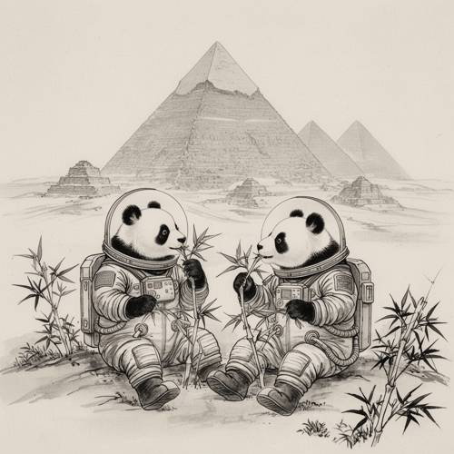
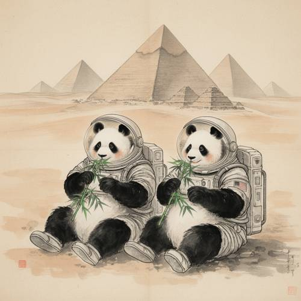

Style — In the style of classical ink painting, against the background of Egyp
In the style of classical ink painting, against the background of Egyptian pyramids, two pandas wearing spacesuits are leisurely tasting bamboo.

Direct — one call, no iteration

Continuum — Kimi K3 + FLUX.2-dev
Judge — Direct
FAILStyle — The image is a monochromatic drawing with fine lines, shading, and cross-hatching, resembling a detailed sketch or engraving. It does not exhibit the characteristic brushstrokes, ink washes, and minimalist aesthetic of classical ink painting.
PASSWorld Knowledge — The background of the image features multiple large, triangular structures situated in a vast desert landscape, which are clearly identifiable as Egyptian pyramids.
PASSAttribute - Quantity — The image clearly shows two pandas sitting in the foreground, both wearing spacesuits and holding bamboo stalks.
Judge — Continuum
PASSStyle — The image is rendered in a style that evokes classical ink painting. It uses a muted color palette, primarily with shades of brown, black, and white, on what appears to be textured paper. The linework and shading, especially on the pyramids and the ground, resemble brushwork. A red seal, a common feature in East Asian ink paintings, is present in the lower-left corner.
PASSWorld Knowledge — The background of the image depicts several large, triangular structures situated in a desert landscape. These structures are clearly identifiable as the Egyptian pyramids.
PASSAttribute - Quantity — The image features two pandas as the central subjects. They are sitting next to each other in the foreground, both wearing spacesuits and eating bamboo.
What the agent did
Thinking
We need need generate image then inspect edit. User prompt requires image. Must use flux2-dev every generate/edit. Need perhaps classical ink painting, pyramids background, two pandas in spacesuits leisurely tasting bamboo. Need avoid cumulative composite editing? First generate. 1024 maybe portrait or landscape? Pyramids background and two pandas, landscape 1024x768 perhaps. But user did not specify. Sizes controlled by harness? Policy says do not set seed. Sizes perhaps can set. Need always model flux2-dev. We can generate. Prompt detailed visual. "Classical Chinese ink painting / sumi-e, traditional ink wash, perhaps minimal color; foreground two giant pandas in realistic spacesuits, helmets maybe clear dome? Tasting bamboo. Egyptian pyramids in background, desert. Need contrast. If transparent dome, spacesuit recognizably space. The prompt says wearing spacesuits. Need pandas visible, perhaps helmet hanging behind? Spacesuits can be bulky white-gray ink lines, transparent helmet domes. Classical ink painting might be monochrome, with pale warm washes. Let's generate.
Step 1 — `generate_image`
{
"model": "flux2-dev",
"prompt": "A classical East Asian ink wash painting on aged rice paper, elegant black sumi-e brushwork with subtle warm sepia and gray washes. In the foreground, two giant pandas wearing bulky astronaut spacesuits with clear dome helmets and visible life-support backpacks sit leisurely side by side, each gently holding and tasting fresh green bamboo shoots. Their black-and-white fur is rendered with expressive textured ink strokes. Behind them rises a quiet Egyptian desert with several monumental pyramids, painted in soft atmospheric ink washes, minimal composition, poetic negative space, traditional hand-painted paper texture, no modern objects beyond the two spacesuits.",
"width": 1024,
"height": 768
}
Result img_0
Thinking
Image appears excellent. Need inspect according policy. Since no text requested, visually assess. It's classical ink, pyramids, two pandas, spacesuits, bamboo. Potential issue maybe American flag on right backpack? Doesn't violate but no need. Faces perhaps obvious. Need mark best. Then stop. Need perhaps no more. But maybe need inspect full. It matches. Mark img_0.
Step 2 — `mark_best`
{
"image": "img_0",
"reason": "The image clearly shows two pandas in spacesuits leisurely eating bamboo, with Egyptian pyramids behind them, all rendered as classical ink wash on aged paper."
}
Thinking
Need final concise with image? Tool result image inline already displayed, final perhaps mention completed. Since marked image should be returned? We can say here.
Model
Created the classical ink-wash scene of two spacesuit-clad pandas enjoying bamboo before the Egyptian pyramids.